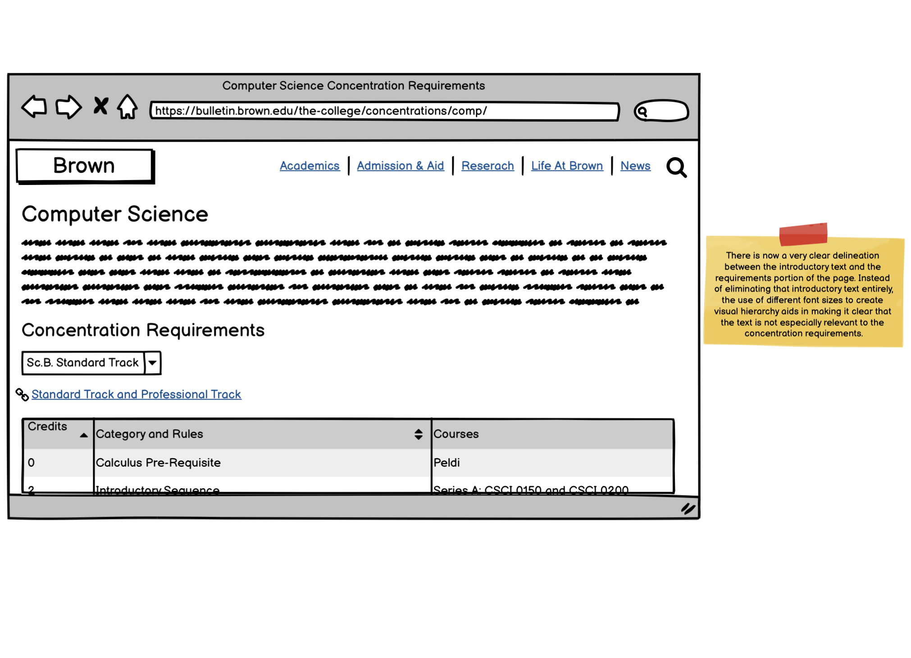
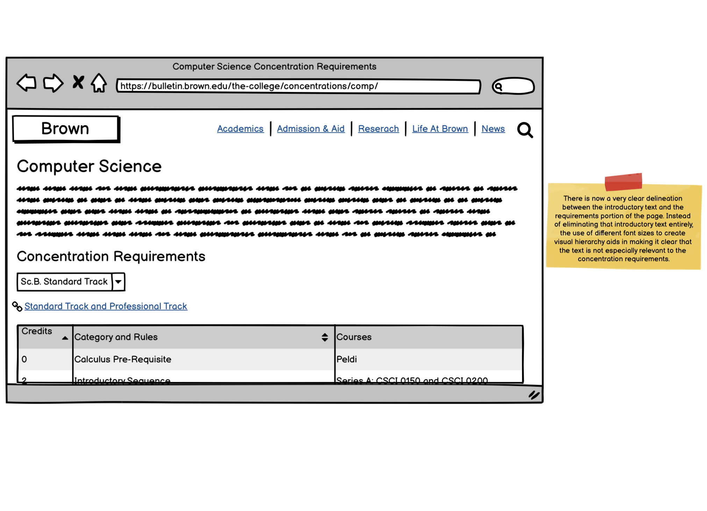

The following article walks you through the process of analyzing and identifying usability flaws in an existing interface, creating low-fidelity and high-fidelity prototypes for various screen sizes, and building a responsive website based on those prototypes.
I wanted to pick an interface that I knew very well and used quite often so that the effort I would be putting into redesigning it would be well worth it and so that I had a sufficiently large dataset of usability concerns that I could try to solve.
This is someone who is either considering applying to Brown or a first/second year student who wants to look at the expected workload for the Computer Science concentration. Learnability, i.e., how easy is the interface to use, is their primary concern. However, the current concentration requirements webpage does not do a great job of addressing this or working with the conceptual model of someone trying to understand the expected workload for the Computer Science concentration. Let's look at some of the most glaring usability concerns and how we can address them.

 

This is a Brown student who is bored and wants to get a sense of what the Computer Science concentration workload is like or a newly declared student who doesn’t yet care too much about requirements. Memorability, i.e., how easy is it to recall what to do, is their primary concern. However, the current concentration requirements webpage does not do a great job of addressing this or working with the conceptual model of someone just occasionally visiting the website. Let's look at some of the most glaring usability concerns and how we can address them.
This is a Brown student who is a declared Computer Science concentrator. They have visited the website many times and know how to get around. Their primary purpose is to see both how many credits they need as well as what those credits can be and they will use this page as a single source of truth. Efficiency, i.e., how quickly can typical tasks be done, is their primary concern. However, the current concentration requirements webpage does not do a great job of addressing this or working with the conceptual model of someone trying to make sure they will graduate on time. Let's look at some of the most glaring usability concerns and how we can address them.
Lastly, we have a concern applicable to any kind of user. This one hinders Learnability, Memorability, and Efficiency. This has to do with just how long the webpage is. There are times at which one would need to go back and forth between the start and end of the entire page multiple times. For example, imagine if your pathways were Systems and Computational Biology, you would be scrolling across the entire page multiple times when trying to consider courses while making sure you are not breaking any rules.

WAVE found no errors and just one contrast error. The contrast error had to do with the low resolution (and probably not been updated in years) header that this page had. The alerts virtually all had to do with small text and it essentially tagged every bit of text on the page. This is a valid concern. The majority of other alerts had to do with miscellaneous missing alt texts on images, however, none of those images were actually displayed, or the images were simply square white blocks atop a white background so it is unclear why those assets are even present.
This is a summary of all the low-fidelity wireframes without annotations and for all screen sizes.
The following visual design style guide acts as documentation that makes my design work more consistent and makes handoffs to developers easier. This document displays the main colors, typography, and reusable components’ different states that I will be using when transitioning my low-fidelity wireframes to high-fidelity prototypes. A big part of what I tried to do with this visual design style guide and with my high-fidelity prototypes was to mimic the design language embodied in some of Brown's newer updated websites such as the Brown home page as well as Focal Point.

This is a summary of all the high-fidelity prototypes without annotations and for all screen sizes. These gifs show the website prototypes within a desktop, tablet and mobile screen showing the responsiveness built-into the website natively from the get-go. I apologize for the lower resolution of the gifs. I wanted to show these interactively in a light weight manner and this was the best solution I could find.

This is a summary of all the high-fidelity prototypes with annotations and for all screen sizes. This time in much higher resolution. The annotations are meant to aid developers with simply taking these Figma prototype files and reproducing them without much additional explanation. The visual design style guide, in combination with details within the Figma files should suffice to provide information on colors and font choices so the annotations primarily focus on suggested elements and layout choices (i.e., CSS attributes like "display: flex" or "flex-direction" or substantial margin/padding etc.) as well as how the website is supposed to behave when in-between screen sizes.
This is a link to the final redesigned website. For the most part, it is just a responsive HTML/CSS translation of the Figma prototypes. Nothing on the webpages are actually functional yet, primarily because the assignment prohibits the use of Javascript. I will probably eventually make it functional and maybe even publibly launch the website (provided Brown allows it since I am using their design language).
To summarize this process ....